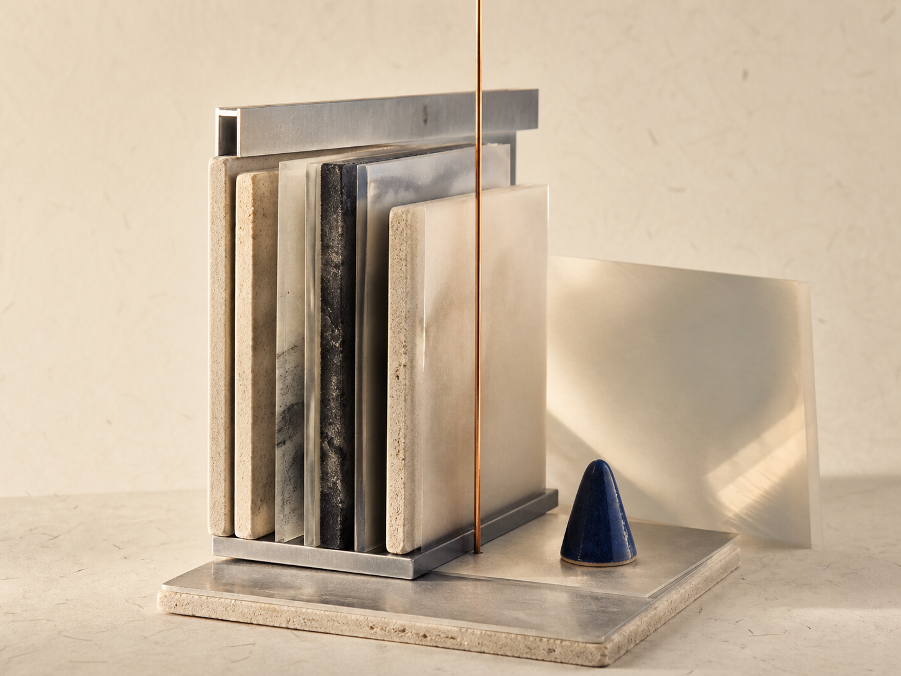

Introducing guided recall.
A new way to return to questions worth keeping open, with enough pause for your own first attempt.

A new way to return to questions worth keeping open, with enough pause for your own first attempt.
New field research on prompts that make a concept available without flattening its context.
A smaller set of practical paths for beginning a topic, testing an explanation, and building a knowledge map.
Topics, questions, and the useful links between them now stay visible as you work.